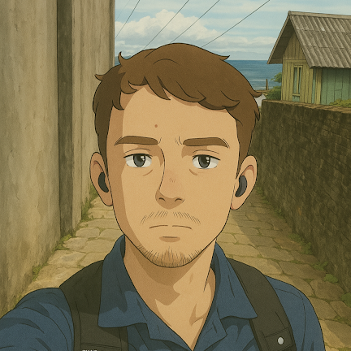

Jon Becker

Summary
I'm a Brazilian with a degree in Information Science from UFSC,
with an interest and proficiency in data analysis, the gaming industry,
Python, Lua, C#, and web development. In 2026, I am completing an internship
at Intelbras within the Products and Business team focused on the company's specialized VMS.
Education
- Game Development Technical Education at SENAC (2023)
- Bachelor Degree of Information Sciente at UFSC (2027)
Work Experience
-
Administrative Assistant - Lider Auto
2023 - 2024
- Inventory Management
- Customer Service
- Improvement of processes
-
Product & Business Internship - Intelbras
2026 - present
- Delivery of Licensed Solutions
- Post-Sales Problems Resolution
- QA of Internal Softwares
- Ownership of processes
Skills
-
Communication *****
-
Versatile Learner ****
-
Proactive ****
-
Situational Optimistic ***
Awards and Certifications
- Google Advanced Data Analytics Course Certificate (COURSERA)
- Python Bootcamp Conclusion Certificate (UDEMY)
- C1 English Proficiency Certificate (EF SET)
More about me
© Jon Becker. All rights reserved